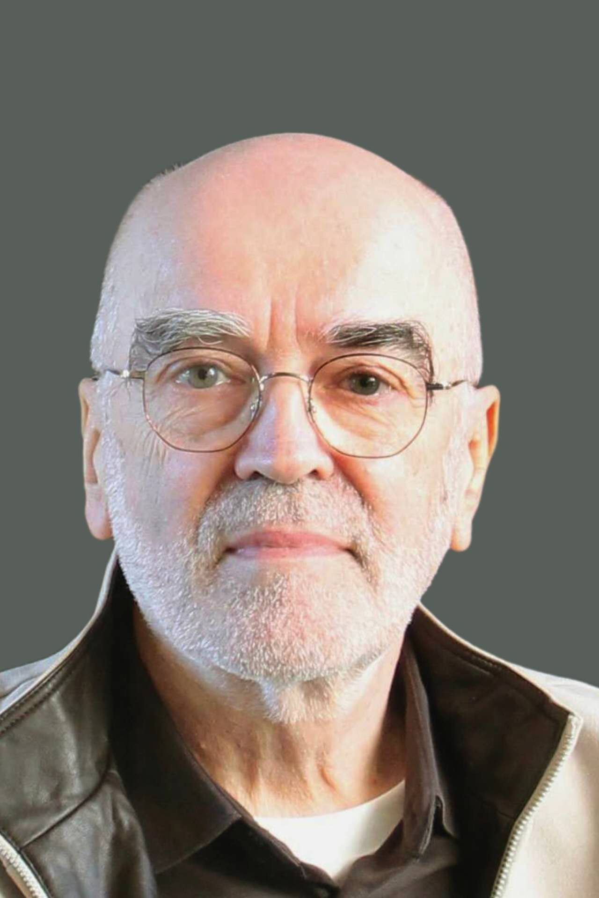

心理治疗实践者
在咨询与培训中，把注意力放回当下的身体感受、关系与内在空间。
MICHEL CLAEYS BOUUAERT
比利时心理治疗师 · 本性治疗创始人 · 世界人本主义心理学大会组织者 · 法国情商协会创始人
ABOUT MICHEL
米杉（Michel Claeys Bouuaert）出生于比利时，曾学习法律与犯罪学，后来把工作转向教育、心理咨询与个人成长。他接触并整合多种人本主义和超个人心理学方法，逐渐形成自己的本性治疗实践。
据团队公开资料，米杉有四十余年专业咨询实践经验，曾参与组织世界人本主义心理学大会，并创立法国情商协会。2000 至 2015 年间，他以北京为工作重心，为中国高校、心理专业机构与学习团体开展讲座和培训。他的中文著作涉及本性治疗、梦工作、情商教育与养育。
经历与身份据团队提供的公开介绍海报；在华教学记录另见北京师范大学公开讲座资料、华侨大学报道。

WORK & WRITING
在咨询与培训中，把注意力放回当下的身体感受、关系与内在空间。
将人本主义与超个人心理学视角结合，发展出本性治疗的工作方法。
通过著作、讲座和工作坊，讨论如何记录、理解并运用梦。
面向儿童、父母、教师和带领者，写作情绪与社会性学习的活动和方法。
PORTRAITS

